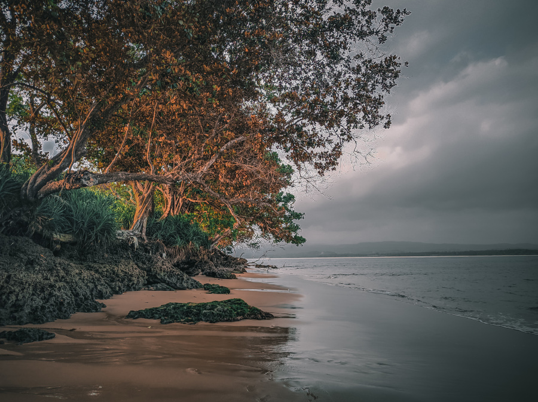

About

Hai!, Perkenalkan nama saya M.Aji Perdana. Saya lahir di Gisting, Kabupaten Tanggamus, Provinsi Lampung, pada tanggal 24 September 2001. Saya memiliki hobi di bidang otomotif, fotografi dan pemrograman, hal itu sering saya lakukan ketika ada waktu luang. Saat ini saya sedang berkuliah di Universitas Bandar Lampung, jurusan Sistem Informasi Fakultas Ilmu Komputer.
Alasan saya memlilih jurusan Sistem Informasi di Universitas Bandar Lampung adalah karna latar belakang saya dari SMK sudah menggeluti jurusan IT, saya melihat sistem dunia saat ini sudah serba digital, itu yang membuat saya ingin memperdalam ilmu IT agar bisa berguna untuk memajukan daerah saya dengan teknologi, Maka dari itu saya melanjutkan kuliah di jurusan Sistem Informasi ini.
Saat juga ini saya sedang mengikuti program studi independen bersertifikat yang diselenggarakan oleh Kampus Merdeka di PT Dicoding Akademi Indonesia bidang Pengembangan Front-end Web dan Back-end. Saya mengikuti program tersebut untuk melatih kemampuan web programming saya, serta sebagai bekal dalam tahap awal untuk terjun di dunia industri Web Development setelah saya lulus kuliah nanti.

Selain menyukai bidang pemrograman web, saya juga memiliki hobi lain yaitu travelling atau jalan-jalan. Biasanya, saya dan kawan-kawan akan pergi jalan-jalan saat libur semester ke lokasi pariwisata yang jauh dan masih belum diketahui banyak orang. salah satunya pada gambar disamping ini. Gambar tersebut merupakan foto yang saya ambil ketika saya liburan di teluk Bangkunat, Kabupaten Pesisir Barat, Provinsi Lampung.
Pantai tersebut dikelilingi oleh pasir putih yang bersih, pantai tersebut juga masih jarang dikunjungi oleh wisatawan, sehingga wajar jika nampak alami dan indah. Namun karena letaknya yang memang langsung berhadapan dengan samudra hindia, Ombak pada pantai ini sangatlah besar, maka dari itu berbahaya bagi wisatawan yang berkunjung jika ingin berenang disekitar pantai tersebut.
Saya juga memiliki keluarga besar di kampus yang sangat saya banggakan, yaitu Unit Kegiatan Mahasiswa Korps Sukarela Palang Merah Indonesia Universitas Bandar Lampung (KSR PMI UBL), dimana setiap anggota yang tergabung di UKM ini, sudah saya anggap sebagai saudara sendiri, susah senang sudah di lewati secara bersama di UKM ini. pokoknya mah KSR PMI UBL The Best!!!